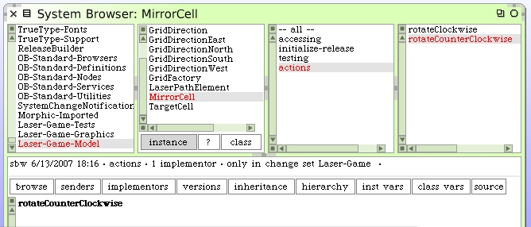

Rotate A Mirror Cell
It's time to actually rotate a mirror cell. We already have the rotation sensing in place. The first place to think about is how we want the model to behave. Focus on the model first, then the GUI. We can even write unit tests for any rotate cell message support we create.
Create a method to handle a rotation request on the MirrorCell class. Right now we don't need to work out what it does. We'll discover that as we write our unit test. You should also write the method for rotating the mirror in the other direction.
Alright. That's enough of a hook. Let's enhance our unit test. Here's our new test method.

It is very straightforward how we expect the mirror cell to behave. However, you may have realized already that the action of rotation clockwise or counterclockwise does the same thing to the mirror. We could probably simplify by reducing to one #rotate message, but if we wanted to somehow animate the rotation, then we'd want to know which way it twisted. Regardless, this thought process causes us to want to write a single method on the mirror class to handle both actions.
It's a simple matter to have our two clockwise and counterclockwise methods use this new method to do the work.

We get the results expected when we run the unit tests.